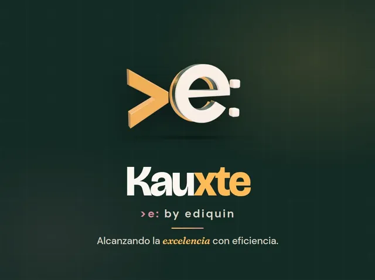
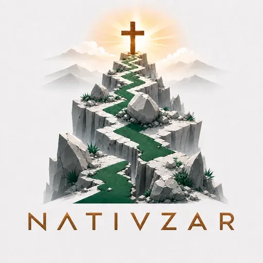
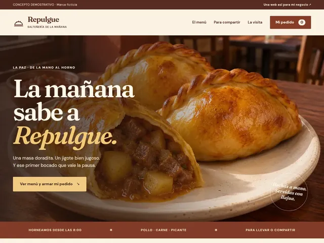
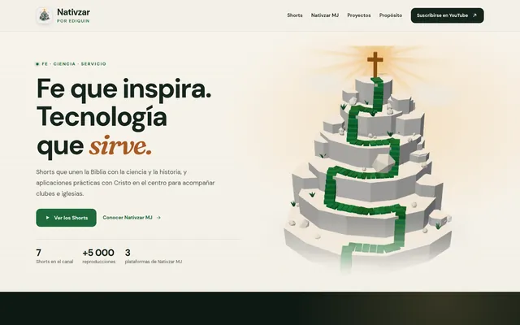

Honor posters
A series for Pathfinder clubs: one system (large title, emblem in the centre, date on a plaque) that changes texture with each topic. Tap a poster to see it large.
Edilson Byron Laura Mercado · La Paz, Bolivia
Electronics engineer · Full-stack developer · AI automation
I built websites for clients such as Cox Automotive at CodeRoad and taught at university. Today I bring engineering and design together: posters, brand identities, videos, websites and AI agent workflows, making sure every piece looks good and works.


Index
Five areas that support each other: design is the foundation, and video, photo, web and AI take it to every screen.
Graphic and brand design
Clear hierarchy, contrast that reads on a phone and one palette used everywhere: that is how I design event posters, complete identities and logos that also live in 3D.
A series for Pathfinder clubs: one system (large title, emblem in the centre, date on a plaque) that changes texture with each topic. Tap a poster to see it large.

The >e: logo, green and gold palette, typography, icons and banners for social media and GitHub.


The flat logo turned into an interactive 3D diorama (Three.js) for the website.

Each format gets its own layout, not a crop of the last one.
For the church · Pathfinders and Youth Ministries, MBON
I design with an agent that knows the official emblems, scarves and uniforms, and repairs the symbols when the AI distorts them. That way a whole series comes out consistent and true to the club's identity.
Badges for courses and camps, made to be embroidered: few colours, a thick border and text you can read at 8 cm.
An illustrated map of the month: each scroll is a club activity.
Hikes, meetings and celebrations, ready for WhatsApp the same day: date, time and place first.
T-shirts and a tracksuit for MBON coordinators, with the Andes as a stripe and three palettes to choose from.
Video and animation
I write the script, record or generate the voice, edit, animate and add subtitles. The Nativzar channel series «Written before it was discovered» already has seven episodes (in Spanish).
Ep. 7 · NewThey said Solomon was wrong about antsProverbs 6:6–8 · 2:55
(opens YouTube) Ep. 4Who invented quarantine?Leviticus 13 · 1:46
(opens YouTube)
Ep. 4Who invented quarantine?Leviticus 13 · 1:46
(opens YouTube) Ep. 3Paths in the sea?Psalm 8:8 · 1:36
(opens YouTube)
Ep. 3Paths in the sea?Psalm 8:8 · 1:36
(opens YouTube) Ep. 2Living water: the secret of hygieneLeviticus 15:13 · 1:30
(opens YouTube)
Ep. 2Living water: the secret of hygieneLeviticus 15:13 · 1:30
(opens YouTube) Ep. 1Why is the sea never full?Ecclesiastes 1:7 · 1:41
(opens YouTube)
Ep. 1Why is the sea never full?Ecclesiastes 1:7 · 1:41
(opens YouTube) ReflectionThe path of lifeMatthew 7:13–14 · 0:53
(opens YouTube)
ReflectionThe path of lifeMatthew 7:13–14 · 0:53
(opens YouTube)Photo editing
I don't just cut photos out: I build real people and objects into a design with matching light, colour and shadow, and prepare each piece for print, for a thumbnail or for a lightweight website.
Websites and apps
I design and build fast, accessible, bilingual websites. I host them on my own server and test them on phone, tablet and desktop before handing them over.
Open kauxte.com
My studio
The site for my web and video services, in Spanish and English, with a quote builder, an animated 3D logo and a chaptered video player.

RepulgueSalteña bakery · menu and WhatsApp ordersDemo Odontología Tres PicosDental clinic · services, team and first visitDemo
Odontología Tres PicosDental clinic · services, team and first visitDemo Puntada KantutaEmbroidery · catalogue and quotesDemo
Puntada KantutaEmbroidery · catalogue and quotesDemo
NativzarChrist-centred projects · Shorts and 3D logoMineApplied AI
I use AI as part of the workshop, not as a shortcut: I generate drafts, voices and shots, then choose, correct and finish each piece with a designer's eye.

Characters and illustrations made with image generators, corrected until every detail of the uniform and emblems is right.
Cinematic shots with Higgsfield and animation in code with Remotion.
Narration with ElevenLabs, my own cloned voice and audio clean-up.
I develop with Claude Code, Codex and Cursor. Agents with LangGraph, CrewAI and n8n, and an agent workflow that designs the club's posters.
Right now
I want to go from sketch to interface design with a tidy system before I code it. I'm practising:
Tools
Experience
I started out designing circuit boards and electronic systems, then built websites for international clients and taught at university. That is where my way of working comes from: measure, test and make sure every part fits.
Universidad Mayor de San Andrés, La Paz, specialising in Computer Systems.
During my internship I designed and assembled about ten circuits, from schematic to board: an interactive board for teaching electronics and the controller for a food pressing machine. My degree project was a biometric attendance system with IoT and a reporting website for the Institute of Applied Electronics.


An open-source web app for pet adoption: database, PHP and MySQL backend and cloud deployment. See the code
Automotive websites and digital experiences for clients such as Cox Automotive: implementation, QA and migration validation, working directly with English-speaking clients. Named TechStar of the Month · Customer Success Legend in September 2025.
Computer Architecture, Digital Systems I and II and Database Systems I at Universidad Adventista de Bolivia, with competency-based materials and AI in class. In 2024 I completed a Diploma in Competency-Based Higher Education.
Cloud deployment and agentic AI training at CodeRoad, agentic AI hackathons, and courses from Anthropic (Model Context Protocol, Claude Code in Action) and on LangGraph.
Tools for Adventist Youth Ministries: a system to score events and camps, agent workflows that design posters and an app for Pathfinder units. Plus my studio, Kauxte, and the Nativzar channel.
Invested as a Master Guide in December 2025, Pathfinder Club director from 2020 to 2024 and Adventist Youth Ministries director in 2017.
To design interfaces as a system before coding them.
Contact
Posters, a logo, a social media video or a complete website. Tell me what you need and I'll reply with a clear proposal. I work in Spanish and English.